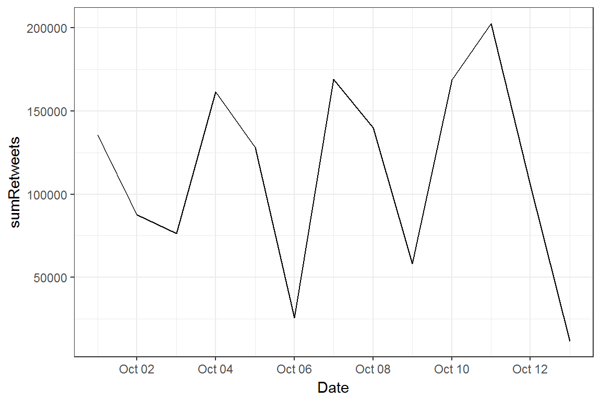

| Date | Tweet | Count |
|---|---|---|
| 2017-10-13 01:18:23 | It is time to take care of OUR COUNTRY, to rebuild OUR COMMUNITIES, and to protect our GREAT AMERICAN WORKERS! https://t.co/YpEA52VOkd | 2793 |
| 2017-10-13 00:12:59 | People are just now starting to find out how dishonest and disgusting (FakeNews) @NBCNews is. Viewers beware. May be worse than even @CNN! | 8869 |
| 2017-10-12 20:19:32 | Happy #NationalFarmersDay! | |
| d> |
||
| 2017-10-12 18:17:40 | We need a tax system that is FAIR to working FAMILIES & that encourages companies to STAY in AMERICA, GROW in AMERI https://t.co/JshQ8cLMS3 | 10177 |
| 2017-10-12 17:06:26 | The time has come to take action to IMPROVE access, INCREASE choices, and LOWER COSTS for HEALTHCARE! | |
| s://t.co/XyZbdtaRBu 9344 | ||
| 2017-10-12 12:45:29 | The Fake News Is going all out in order to demean and denigrate! Such hatred! | 13846 |